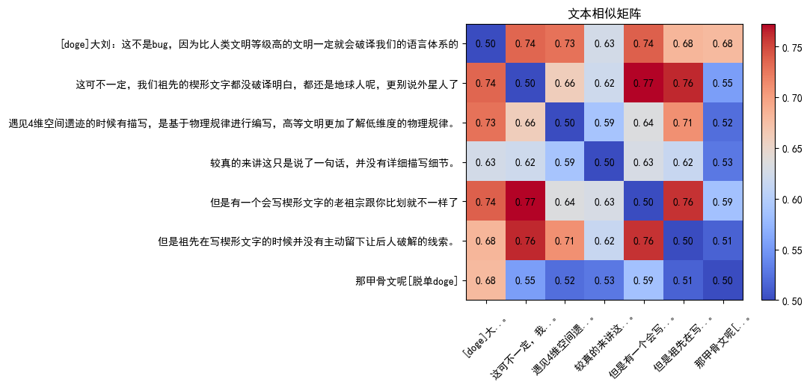
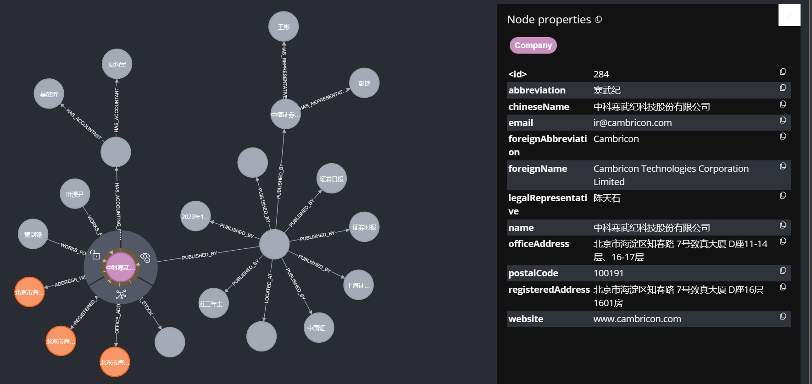

GPT 是什么
发布日期：2022年2月22日
GPT是英文Generative Pre-trained Transformer的缩写，中文翻译为生成式预训练变换器。
它是由OpenAI推出的一种基于Transformer模型的自然语言处理（NLP）模型，旨在实现自然语言生成（NLG）、自然语言理解（NLU）等任务。GPT模型基于大规模语料库进行预训练，可以自动学习文本的语义和语法信息，使得在各种NLP任务上表现出了很好的性能。
目前，GPT模型已经更新到了第三代（GPT-3），它是迄今为止最大的预训练语言模型，拥有1750亿个参数。GPT-3可以生成高质量的自然语言文本，并且在很多NLP任务上表现出了惊人的效果，例如文本分类、机器翻译、对话系统等。同时，GPT-3也有一些局限性，例如在处理一些常识性问题和逻辑推理等方面还存在一定的问题。
总之，GPT是一种基于Transformer模型的强大的预训练语言模型，它在自然语言生成和理解方面取得了很好的效果，在NLP领域中有着广泛的应用。
文本相似判断
发布日期：2022年2月17日
文本相似度判断是指对两个或多个文本进行比较，评估它们之间的相似程度。文本相似度判断的效果很大程度上取决于文本信息的表征方法， 而深度学习在表示学习上的巨大优势，使得深度学习在文本相似度判断中表现出了很好的效果，下面列举一些常用的深度学习方法：
- 基于卷积神经网络的模型：如TextCNN模型，它使用卷积神经网络对文本进行卷积操作，提取文本的局部特征，再通过池化操作进行下采样，最后使用全连接层将特征映射到相似度得分。
- 基于循环神经网络的模型：如SiameseRNN模型，它使用循环神经网络对文本进行建模，然后计算两个文本之间的相似度得分。还有LSTM和GRU等模型，可以对长文本进行处理。
- 基于Transformer的模型：如BERT和RoBERTa等预训练语言模型，它们使用Transformer网络结构对文本进行编码，得到文本的向量表示，然后将向量进行相似度计算。
- 基于双塔结构的模型：如MatchPyramid模型，它使用两个神经网络，每个网络分别对一个文本进行编码，然后通过一个匹配层将两个编码的结果匹配，最后得到文本的相似度得分。
data = [
'[doge]大刘：这不是bug，因为比人类文明等级高的文明一定就会破译我们的语言体系的',
'这可不一定，我们祖先的楔形文字都没破译明白，都还是地球人呢，更别说外星人了',
'遇见4维空间遗迹的时候有描写，是基于物理规律进行编写，高等文明更加了解低维度的物理规律。',
'较真的来讲这只是说了一句话，并没有详细描写细节。',
'但是有一个会写楔形文字的老祖宗跟你比划就不一样了',
'但是祖先在写楔形文字的时候并没有主动留下让后人破解的线索。',
'但是祖先在写楔形文字的时候并没有主动留下让后人破解的线索。',
'那甲骨文呢[脱单doge]']
使用Transformer将文本转成向量，使用余弦相似度作为衡量文本相似度的方法:
import torch
from transformers import BertModel, BertTokenizer
# 判断是否存在GPU,存在则优先使用
device = "cuda:0" if torch.cuda.is_available() else "cpu"
device = torch.device(device)
# 从HuggingFace上下载预训练模型,这里使用的是 bert-large-chinese
model_path = 'bert-large-chinese'
tokenizer = BertTokenizer.from_pretrained(model_path)
bert = BertModel.from_pretrained(model_path)
# 模型和数据加载至GPU
bert.to(device)
inputs = tokenizer(list(data), padding=True, return_tensors="pt").to(device)
# 这里只用推理,所以禁用梯度计算从而可以减少内存占用并提高代码运行速度
with torch.no_grad():
outputs = bert(**inputs)
# 使用 last_hidden_state 的均值作为文本向量表示
embeddings = outputs.last_hidden_state.mean(axis=1)
# 计算余弦相似度矩阵
similarity_matrix = torch.nn.functional.cosine_similarity(embeddings.unsqueeze(1), embeddings.unsqueeze(0),
dim=-1)
# 由于使用GPU计算,要想进一步处理结果需要将计算结果放在CPU中
similarity = similarity_matrix.detach().cpu().numpy().copy()
# 相似度很高(接近1)的对象在推荐业务中是无效的推荐内容，现在为了方便展示过滤掉
similarity[similarity > 0.9999] = 0.5
然后使用 matplotlib 绘制热力图进行展示:
如此便完成了文本相似度计算，从计算结果来看，样本中相似度最高的是这三条：[
'这可不一定，我们祖先的楔形文字都没破译明白，都还是地球人呢，更别说外星人了',
'但是有一个会写楔形文字的老祖宗跟你比划就不一样了',
'但是祖先在写楔形文字的时候并没有主动留下让后人破解的线索。',]
可以看出来他们都在比较楔形文字破译与自译解系统,话题相关性比较高。
构建知识图谱
发布日期：2022年3月12日
知识图谱是一种以图形方式表示知识的技术，旨在将信息以机器可读和理解的形式进行组织和表达。它是一种基于语义的信息表示方法，可以帮助机器理解信息之间的关系，从而提高信息的价值和可发现性。 知识图谱通常由实体、属性和关系构成。实体可以是任何事物，如人、地点、事件、产品等。属性是描述实体的特征，如姓名、年龄、出生地等。关系表示实体之间的联系，如父母关系、工作关系等。 知识图谱的目标是将各种信息整合成一个统一的知识库，以支持自然语言处理、问答系统、智能推荐、智能客服等应用。
构建知识图谱通常需要以下几个步骤：
- 确定知识图谱的范围和目标领域：这将有助于决定需要收集哪些数据以及如何组织和建模这些数据。
- 收集数据：收集数据的方法包括手动输入、爬虫爬取网页、从现有数据库中提取数据等。在收集数据时，需要考虑数据的质量、准确性和可靠性等因素。
- 数据预处理：对于不同的数据源和类型，需要进行一些数据预处理操作，例如数据清洗、去重、标准化、结构化等。
- 建立实体和关系模型：根据知识图谱的目标和领域，设计并建立实体和关系模型。实体是知识图谱中的基本元素，例如人、组织、地点、概念等。关系是实体之间的连接，例如人与人之间的关系、人与组织之间的关系等。
- 数据存储和管理：选择适合的数据存储和管理系统，例如图数据库（如Neo4j）、关系型数据库（如MySQL、PostgreSQL）等。
- 数据导入和查询：将处理后的数据导入到数据库中，并编写查询语句进行数据的查询和分析。
- 知识图谱的应用和维护：将知识图谱应用到实际场景中，例如推荐系统、智能客服、信息检索等。在使用过程中，还需要对知识图谱进行维护和更新。
要建立实体和关系模型，可以按照以下步骤：
- 定义实体类型：确定知识图谱中需要表示的实体类型，例如人物、公司、地点等等。
- 定义实体属性：为每个实体类型定义属性，例如人物可以有姓名、性别、出生日期等属性，公司可以有名称、成立日期、所在地等属性。
- 定义关系类型：确定实体之间可能存在的关系类型，例如工作关系、投资关系、家庭关系等。
- 定义关系属性：为每个关系类型定义属性，例如工作关系可以有起始时间、结束时间、工作职位等属性。
- 构建实体和关系的数据模型：使用实体类型、实体属性、关系类型和关系属性来构建知识图谱的数据模型。
- 导入数据：将实际数据导入知识图谱中，创建实体节点和关系边。
根据以上步骤，传统上知识图谱自动化构建可以拆分成多个模块，包括：
-
实体识别（Named Entity Recognition，NER）的目标是从文本中自动识别出命名实体，如“刘德华的国籍是中国”，其中“中国”是一个组织机构、“刘德华”是一个人名。 -
关系抽取（Relation Extraction）的目标是从文本中自动识别出实体之间的关系，如“北京是中国的首都”，其中“北京”和“中国”的关系是“首都”。 -
属性抽取（Attribute Extraction）的目标是从文本中自动识别出实体的属性和关系的属性，如“刘德华的年龄是32岁”，其中“年龄”是“刘德华”的一个属性。
通常使用机器学习或者深度学习方法，例如使用循环神经网络（RNN）或者长短期记忆网络（LSTM）叠加 条件随机场（CRF）、神经网络等，完成 实体识别任务，使用 支持向量机（SVM）、条件随机场（CRF）、神经网络等，完成关系抽取、属性抽取任务。而这些方法基本都是基于有监督机器学习，需要大量的人工标注。
现在基于GPT(Generative Pre-trained Transformer)可以单步完成知识图谱的抽取任务，即直接从文本中抽取命名实体，命名实体关系，实体属性和关系属性：
数据来源使用寒武纪：2021年年度报告（修订版） 对于以下示例文本：
content = """ 中科寒武纪科技股份有限公司 2021年年度报告 公司简介和主要财务指标 公司基本情况 公司的中文名称 中科寒武纪科技股份有限公司 公司的中文简称 寒武纪 公司的外文名称 Cambricon Technologies Corporation Limited 公司的外文名称缩写 Cambricon 公司的法定代表人 陈天石 公司注册地址 北京市海淀区知春路 7号致真大厦 D座16层1601房 公司注册地址的历史变更情况 2020年3月，从“北京市海淀区科学院南路 6号科研综合楼644室”变更为目前公司注册地址 公司办公地址 北京市海淀区知春路 7号致真大厦 D座11-14层、16-17层 公司办公地址的邮政编码 100191 公司网址 www.cambricon.com 电子信箱 ir@cambricon.com 联系人和联系方式 董事会秘书（信息披露境内代表） 证券事务代表 姓名 叶淏尹 童剑锋 联系地址 北京市海淀区知春路 7号致真大厦 D座12 层 北京市海淀区知春路 7号致真大厦 D座 12层 电话 010-83030796 -8025 010-83030796 -8025 传真 010-83030796 -8024 010-83030796 -8024 电子信箱 ir@cambricon.com ir@cambricon.com """使用Python进行开发，使用OpenAI的GPT3.5的API，抽取知识图谱，并以CQL的形式返回：
import openai
messages_system = {"role": "system", "content": """你是一个neo4j数据库的CQL生成助手。"""}
messages_user = {"role": "user", "content": content}
messages = [messages_system,messages_user]
responses = openai.ChatCompletion.create(
model="gpt-3.5-turbo",
messages=messages,
temperature=0.0,
)
content = responses["choices"][0]["message"].content
获得的抽取结果内容如下：
// 创建公司节点
MERGE (company:Company{
name:'中科寒武纪科技股份有限公司', chineseName:'中科寒武纪科技股份有限公司', abbreviation:'寒武纪',
foreignName:'Cambricon Technologies Corporation Limited', foreignAbbreviation:'Cambricon',
legalRepresentative:'陈天石', registeredAddress:'北京市海淀区知春路 7号致真大厦 D座16层1601房',
officeAddress:'北京市海淀区知春路 7号致真大厦 D座11-14层、16-17层',
postalCode:'100191', website:'www.cambricon.com', email:'ir@cambricon.com'});
// 创建联系人节点
MERGE (contact1:Contact{
name:'叶淏尹', position:'董事会秘书（信息披露境内代表）', address:'北京市海淀区知春路 7号致真大厦 D座12层',
phone:'010-83030796 -8025', fax:'010-83030796 -8024', email:'ir@cambricon.com'});
MERGE (contact2:Contact{
name:'童剑锋', position:'证券事务代表', address:'北京市海淀区知春路 7号致真大厦 D座12层',
phone:'010-83030796 -8025', fax:'010-83030796 -8024', email:'ir@cambricon.com'});
// 创建联系人与公司的关系
MATCH (company:Company{name:'中科寒武纪科技股份有限公司'})
MATCH (contact1:Contact{name:'叶淏尹'})
MERGE (contact1)-[:WORKS_FOR]->(company);
MATCH (company:Company{name:'中科寒武纪科技股份有限公司'})
MATCH (contact2:Contact{name:'童剑锋'})
MERGE (contact2)-[:WORKS_FOR]->(company);
// 创建公司注册地址节点
MERGE (registeredAddress:Address{address:'北京市海淀区知春路 7号致真大厦 D座16层1601房'});
// 创建公司注册地址历史变更节点
MERGE (historyAddress:Address{address:'北京市海淀区科学院南路 6号科研综合楼644室'});
// 创建公司注册地址历史变更关系
MATCH (company:Company{name:'中科寒武纪科技股份有限公司'})
MATCH (historyAddress:Address{address:'北京市海淀区科学院南路 6号科研综合楼644室'})
MERGE (company)-[:ADDRESS_HISTORY]->(historyAddress);
// 创建公司办公地址节点
MERGE (officeAddress:Address{address:'北京市海淀区知春路 7号致真大厦 D座11-14层、16-17层', postalCode:'100191'});
// 创建公司与注册地址、办公地址的关系
MATCH (company:Company{name:'中科寒武纪科技股份有限公司'})
MATCH (registeredAddress:Address{address:'北京市海淀区知春路 7号致真大厦 D座16层1601房'})
MERGE (company)-[:REGISTERED_ADDRESS]->(registeredAddress);
MATCH (company:Company{name:'中科寒武纪科技股份有限公司'})
MATCH (officeAddress:Address{address:'北京市海淀区知春路 7号致真大厦 D座11-14层、16-17层', postalCode:'100191'})
MERGE (company)-[:OFFICE_ADDRESS]->(officeAddress);
使用 python 执行以上CQL语句保存至 neo4j 数据库中：
import neo4j
uri = "bolt://localhost:7687"
driver = neo4j.GraphDatabase.driver(uri, auth=("xxxxxx", "xxxxxxx"))
with driver.session() as session:
for cql in content.split(';'):
cql = cql.strip()
if cql != '':
result = session.run(cql)
如此，便完成了知识图谱的自动化构建。嗯
浏览器访问 neo4j 数据库，执行 CQL 查询语句：'MATCH (n) RETURN n'，便可以查看所有的节点和关系
《惊蛰》
发布日期：2022年1月22日
惊蛰，万物醒。清明之前，万物苏醒，草木抽芽，春意盎然，生机勃勃。激烈的春雷，把冬的沉寂和死寂炸得粉碎，为春天打开了大门。
每年惊蛰的到来，都是一个新的开始。在这个时节里，大地上的所有生命都在等待，等待春天的降临，等待新生的机会。不仅仅是自然界的万物，人类也一样，正如“春天在哪里”的歌词所唱：“春天在哪里，春天在大地上。”春天就在我们身边，我们只需要张开双臂，接受春天的馈赠，享受春天的阳光和空气。
惊蛰时节，是人们准备开始耕作和播种的时候，是一年中最为忙碌和重要的时节。这是一个充满活力和机遇的季节，也是展现人类智慧和勤劳的时节。对于每一个农夫和种植者来说，惊蛰代表了一个全新的开始，一个新的希望。
在这个季节里，我们不仅需要喜迎春天的到来，更需要为我们的新生活而努力。我们需要摒弃过去的困境和顾虑，向前迈进，创造属于自己的新生。我们需要像春天一样，勇敢、坚韧、坚强，把阻挡我们前行的一切瓦解，向着自己的目标和未来前行。
在这个季节里，不仅需要体会生命的复苏和焕发，更需要感受到一种新的可能性。我们可以拥抱春天，拥抱新生，也可以拥抱未来，拥抱希望。只要我们用心感受，用行动践行，那么新生的希望和未来就会属于我们。
惊蛰是一个转折点，也是一个新的起点。让我们在这个季节里，携手迎接春天的到来，共同创造美好的未来。